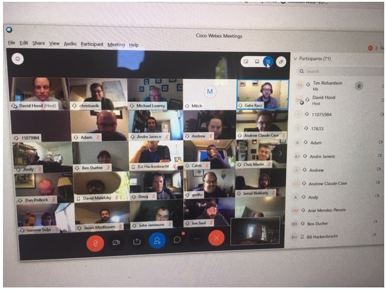

|
LIVE VIRTUAL DIPLOMACY EXPERIENCEAT VIRTUAL DIXIECON 2020by Edi Birsan |
|---|
|

I have been playing Diplomacy for 55 years in all sorts of mediums. I love the Face-to-Face tournament setting, however the Year of Covid Attack has denied the hobby the traditional blood bath pleasure. I was renewing an experience as I generally have stayed away from on-line short or real time games for many many years. In an astounding wonderful effort, David Hood with an all star support group did a one day Virtual Diplomacy event with 15 minute deadlines and 8 minutes for adjustments all on-line. There were 11 boards in two rounds on Saturday May 23. The base system was Backstabbr for the adjudications, order presenting in text and mapping, with a basic in-game communication for player to player negotiations which they called 'press'. In addition there was a second platform, Webex, which contained a game specific player to player communication channel, as well as GM to all players communication channel. There was also a general thread for running commentary by folks and a on-going thread for observers, the eliminated and those that were also playing non-Diplomacy games outside of the Backstabbr platform. Backstabbr Move ChangeOrders were entered on the map by point and click, easy enough, and there were Drop Dead deadlines. When a game season was adjudicated you had to go to the menu bar of your system to reload the page. You did not get a notice in-game of the season adjudication. You found out because the manual GM (each game had one for one of these specific reasons) sent a notice to the Webex platform that you better have installed to find out. The system was not designed for continuous live streaming of adjustments so that it only automatically updated the maps and the turn whenever you first logged on. This was a major problem at times with a clock running that was Drop Dead. Backstabbr Move DisplayThe mapping displayed adjudication was OK but at times I mostly went by the written listing of orders in text form. They had red highlighted orders that failed and were easier for me to follow than some of the criss-cross of lines and circles. This is a personal preference, where possibly the 21st Century new-borns may be more acclimated to the mapping display. Backstabbr VotingTo vote to end the game it was either a draw or it failed. Players had the option of voting to 'surrender' which meant that they were out of the draw. You could detail a 2-3-4-5-6-7 way draw; you had to pick one and if everyone agreed to that one and it matched with players who surrendered, the game ended. You did not know how people voted when it failed. You voted with your order submission only. This worked out well, though there was one funny case where an 11 unit country accidentally voted themselves out of the draw, but the players with the GM by acclaim and good sportsmanship corrected it for the record. Order Sequence (Good)Unlike traditional Face to Face games, you could negotiate during adjustments and retreats. This is rulebook prohibited. However the origin of the rule was simply a method to cut down on the amount of time it took to play the game and had no real other origins in terms of historic simulation or other fantasy design. I like this as it increased player interactions. The downside was that it made the games longer if the player did not take the option to automatically adjudicate when the retreat/adjustment was done. I recall one easy retreat I had, but I used the extra 5 to 8 minutes to negotiate a difficult set of stalemate position building moves with my allies. Player Communication (… there are ways …)Players had the following aspects available to negotiate:
I was quite concerned with the text messages, because while I am fast enough on a keyboard, my spelling is horrible and at the same time no matter how fast I type, I feel it is slow. Also key nuance and body languages are missed in text. To overcome some of this I did some preparation. I had my opening communications done on a word processor with different variations and giving my cell phone and other info so I could cut and paste and get out an intro to each country covering the basics, be it bounces, some alliance structure inquiries etc., all in seconds to all the other 6 players. Also I had a bunch of meme/cartoons pre-selected on a separate screen that I could throw in for some humor. Most interesting to some, was that I had written up in advance a simple set of about 4 classic stalemate lines with their orders so if it came down to needing one I did not have to explain it to everyone, I just cut and paste and sent it out. This I only had to to do twice over the two games played. But it was a handy technique to have in helping less experienced players. Missing also is the whole visuals, though I suspect it was possible for visual communication, but I was too tech-limited to figure it out. This was a major concern to me since I am always taking in the totality of communication from players from body language to subconsciously even down right smells. For me it quickly came down to using good Ole' Ma Bell: the phone. Both games were highly negotiated with phone calls and even conference calls easily added just as you would in a Face to Face tournament. Though you were missing that glance across the room to see who was talking to whom. But maybe that is a good thing. Keeping somewhat track, this was my rough use of methods:
As soon as you get their phone number you set it up in your contacts, and by using the phone menu tab for recent calls you can single push a dial up easily. Much faster than connecting to type a message. It can be frustrating when you call someone and get an answering machine, but it worked. Having the voice of players allows some use of tone and veracity indicators in communication to help you play. It also puts more pressure on you to understand and explain since you cannot point to a map to emphasize what you want. But it was fun. One player had a horrible phone connection and we could not use them for a 3 way conference. My experience here tells me that in such a virtual tournament, the whole text thing is not for me and if you are in a V-Tournament that is live and you rely on text messages and your opponents are using the phone, you are going to have a real uphill battle diplomatically. Voice allows instant feed back, and interaction without waiting for a text. However, if you are an email player it is going to be a major game culture shock to have to talk to people. One player had never had a voice communication on a game in his life. He likes it now. Other Games ImpactIn tournaments, the experienced players have a sense of what is going on on the other boards and who is ahead, what countries have achieved what for Best Country awards and the like. I have seen games greatly impacted because a player wanted a Best Country Award after seeing what other games closed at, or if they needed a 3 way or 14 center top or whatever point system was being used to win. Here I had no idea of what was going on in other games. In fact I did not know there was a solo, which would be a rocket banner news flash in a regular tournament. This was very good. While there was a commentary channel, I did not check it out, because we did not have time. Still have not seen it. Overall it was a rather intense bunch of hours and it was fun. There are things to work on but that is the nature of the hobby. We go forward together, except when it comes to Belgium.
If you wish to e-mail feedback on this article to the author, and clicking
on the envelope above does not work for you, feel free to use the
|